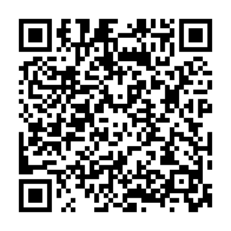

電話・メール・アクセスの3つから、ご都合のよい方法をご利用ください。
参拝時間や当日の予定など、確実な確認が必要な場合はお電話でお問い合わせください。
078-861-4144
お急ぎでないお問い合わせは、メールでもご連絡いただけます。
kobe.myouhonji@gmail.com
妙本寺は神戸市灘区原田通にあり、JR灘駅北口から徒歩約3分です。

寺報・行事案内・掲示物などでは、このQRコードから今月の行事や初めての方へのご案内をご覧いただけます。